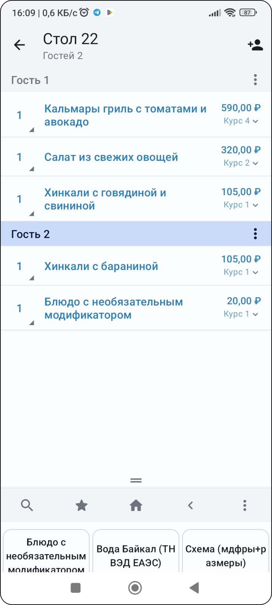
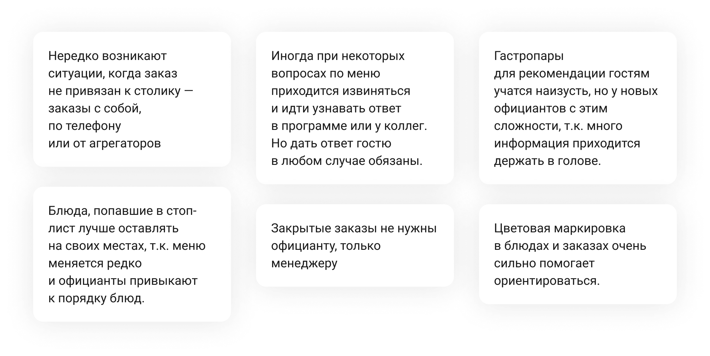
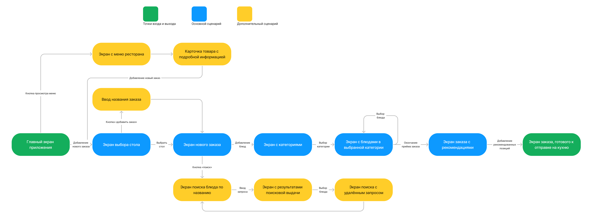
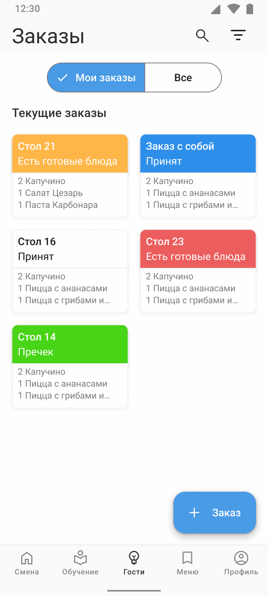
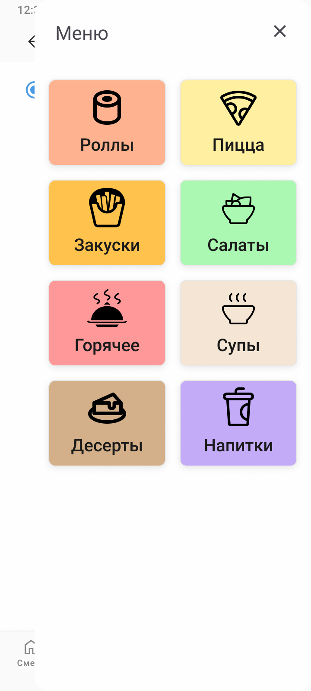
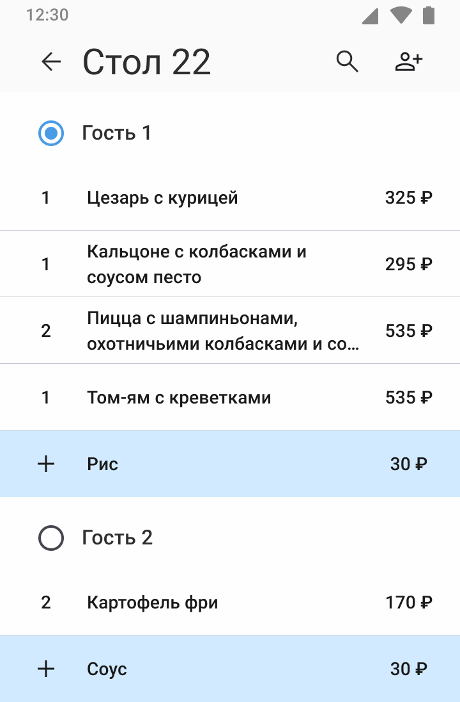
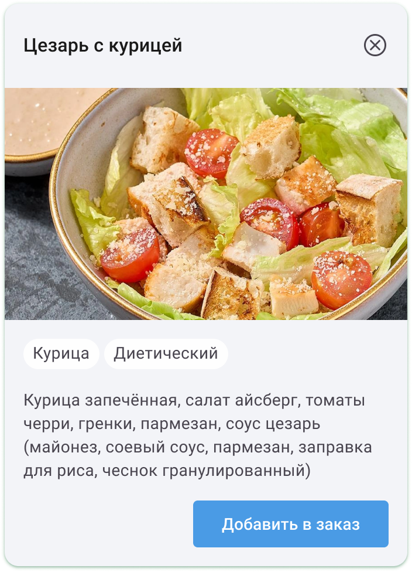

Исследование
Для погружения в процесс я изучил iikoWaiter и провёл интервью с управляющей рестораном: опыт в HORECA более 10 лет, работа официантом, менеджером и управляющей в четырёх ресторанах.


Инсайты
Интервью показало, что проблема не только в создании заказа. Официанту нужно быстро консультировать гостей, ориентироваться в большом меню, работать с заказами разных типов и не ошибаться в позициях, модификаторах и остатках.
- Нужно просматривать меню без создания заказа, чтобы консультировать гостя.
- Карточка блюда должна содержать состав, аллергены, вес, калорийность, фото и теги.
- Меню меняется нечасто, поэтому позиции в стоп-листе лучше оставлять на месте, но делать неактивными.
- Для адаптации новых официантов приложение может работать как учебное пособие по меню.

User Flow
Перед проектированием экранов я оформил структуру сценария в User Flow: от выбора заказа и стола до просмотра меню, добавления блюд, работы с гостями и отправки заказа на кухню.

Экраны
Для ускорения прототипирования я использовал компоненты Material Design 3 и сфокусировался на сценарии: заказы, меню, карточка блюда, быстрые действия и статусы.



